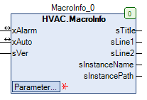

MacroInfo (FB)¶
FUNCTION_BLOCK MacroInfo
Kurzbeschreibung¶
Anzeige von Statusinformationen zu einem MakroAnwendung: Visualisierung
Darstellung¶

Schnittstellen¶
Eingänge¶
Name Datentyp Wertebereich Initialwert Funktion sVersion STRING Version des Makros
Ausgänge¶
Name Datentyp Wertebereich Initialwert Funktion sTitle STRING Name des Makros sLine1 STRING Zeile 1 der Kachel sLine2 STRING Zeile 2 der Kachel sInstanceName STRING Name der Instanz sInstancePath STRING Pfadname der Instanz
Ein- und Ausgänge¶
Name Datentyp Wertebereich Initialwert Funktion xAlarm BOOL Sammelstörmeldung xAuto BOOL Statusmeldung der Betriebsart ( 0 = Handbetrieb, 1 = Automatikbetrieb )
Sollwerte / Parameter¶
Name Datentyp Wertebereich Initialwert Funktion sEditLine1 STRING ‘Line1’ Eingabewert - Zeile 1 der Kachel sEditLine2 STRING ‘’ Eingabewert - Zeile 2 der Kachel
Funktionsbeschreibung¶
Allgemeines¶
Dieser Funktionsbaustein dient zur Anzeige von Statusinformationen zu einem Makro. Hierzu wird der gesamte Instanzpfad je nach
gewünschter Funktion zerlegt und angezeigt.
Eingang sVersion¶
Der Eingang wird aktuell nicht verwandt.
Ein- und Ausgang xAlarm¶
Der Ein- und Ausgang wird aktuell nicht verwandt.
Ein- und Ausgang xAuto¶
Der Ein- und Ausgang wird aktuell nicht verwandt.
Ausgang sTitle¶
Der Ausgang sTitle ist mit dem Ausgang sInstanceName identisch und enthält den aktuellen Namen des Makros.
Ausgang sLine1¶
Der Ausgang sLine1 wird der Inhalt des Sollwert / Parameters sEditLine1 angezeigt.
Ausgang sLine2¶
Der Ausgang sLine2 wird der Inhalt des Sollwert / Parameters sEditLine2 angezeigt.
Ausgang sInstanceName¶
Der Ausgang sInstanceName ist mit dem Ausgang sTitle identisch und enthält den aktuellen Namen des Makros.
Ausgang sInstancePath¶
Der Ausgang sInstancePath enthält den aktuellen Instanzpfad des Makros ( Device.Application.POU )
Visualisierung¶
Codesys¶
- InOut:
Scope Name Type Initial Comment Input xAlarm BOOL Sammelstörmeldung xAuto BOOL Statusmeldung: 0=Hand 1=Auto sVersion STRING Makroversion sEditLine2 STRING ‘’ Zeile zwei der Kachel sEditLine1 STRING ‘Line1’ Zeile eins der Kachel Output sTitle STRING Instanzname Makro (automatisch generiert) sLine1 STRING Zeile eins der Kachel sLine2 STRING Zeile zwei der Kachel sInstanceName STRING Instanzname (automatisch generiert) sInstancePath STRING Instanzpfad (automatisch generiert)